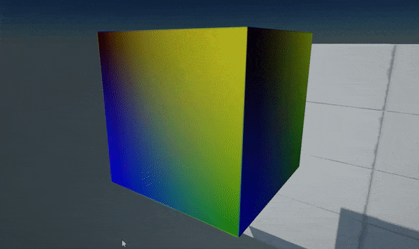
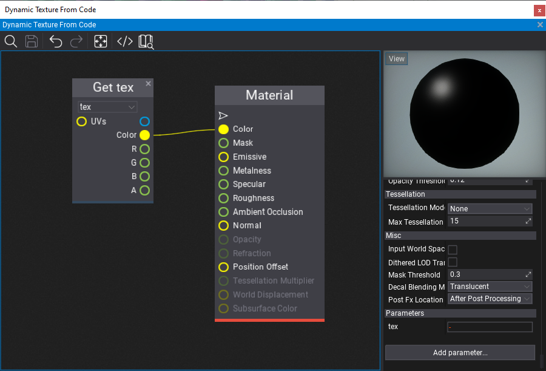

HOWTO: Use dynamic texture

In this tutorial, you will learn how to create a GPU texture from C# script that will be updated every frame with a custom data send from CPU to GPU.
Tutorial
1. Create new C# script DynamicTextureFromCode
2. Write texture data generating code
public class DynamicTextureFromCode : Script
{
private GPUTexture _tempTexture;
private MaterialInstance _tempMaterialInstance;
private byte[] _data;
public Material Material;
public Model Model;
public override void OnStart()
{
// Ensure that model asset is loaded
Model.WaitForLoaded();
// Create new GPU texture
var texture = new GPUTexture();
_tempTexture = texture;
var desc = GPUTextureDescription.New2D(64, 64, PixelFormat.R8G8B8A8_UNorm, GPUTextureFlags.ShaderResource);
if (texture.Init(ref desc))
return;
// Use a dynamic material instance with a texture to sample
var material = Material.CreateVirtualInstance();
_tempMaterialInstance = material;
material.SetParameterValue("tex", texture);
// Add a model actor and use the dynamic material for rendering
var staticModel = Actor.GetOrAddChild<StaticModel>();
staticModel.Model = Model;
staticModel.SetMaterial(0, material);
// Plug into rendering to update texture at runtime
MainRenderTask.Instance.PreRender += OnPreRender;
}
public override void OnDestroy()
{
MainRenderTask.Instance.PreRender -= OnPreRender;
// Ensure to cleanup resources
_tempTexture?.ReleaseGPU();
FlaxEngine.Object.Destroy(ref _tempTexture);
FlaxEngine.Object.Destroy(ref _tempMaterialInstance);
}
private unsafe void OnPreRender(GPUContext context, ref RenderContext renderContext)
{
if (!Enabled || !Actor.IsActiveInHierarchy)
return;
var desc = _tempTexture.Description;
var size = desc.Width * desc.Height * PixelFormatExtensions.SizeInBytes(desc.Format);
if (_data == null || _data.Length != size)
_data = new byte[size];
fixed (byte* dataPtr = _data)
{
// Generate pixels data (linear gradient)
var colorsPtr = (Color32*)dataPtr;
var offset = Mathf.Cos(Time.GameTime * 3.0f) * 0.5f + 0.5f;
for (int y = 0; y < desc.Height; y++)
{
float t1 = (float)y / desc.Height;
var c1 = Color32.Lerp(new Color32((byte)(offset * 255), 0, 0, 1), Color.Blue, t1);
var c2 = Color32.Lerp(Color.Yellow, new Color32(0, (byte)(144 - offset * 80), 0, 1), t1);
for (int x = 0; x < desc.Width; x++)
{
float t2 = (float)x / desc.Width;
colorsPtr[y * desc.Width + x] = Color32.Lerp(c1, c2, t2);
}
}
// Update texture data on a GPU (send data)
uint rowPitch = (uint)size / (uint)desc.Height;
uint slicePitch = (uint)size;
context.UpdateTexture(_tempTexture, 0, 0, new IntPtr(dataPtr), rowPitch, slicePitch);
_tempTexture.ResidentMipLevels = 1; // Mark mip-map as available (required for standard textures only - other than render textures)
}
}
}
3. Create material
Create a sample material that contains a public GPUTexture parameter named tex. It's used by the script to assign a texture to draw.

4. Link material and model
Add created script DynamicTextureFromCode to an actor in your scene (or create a new one for it). Then select it and assign the model and created material (as shown in a picture below).
5. Test it out!
Press Play (or F5) and see the results! It will be updated only if Game Viewport is active (opened) because this example uses MainRenderTask.Instance to handle custom GPUContext logic before frame rendering. To overcome this you can create and use your own RenderTask object to use the rendering pipeline independently of the game view.